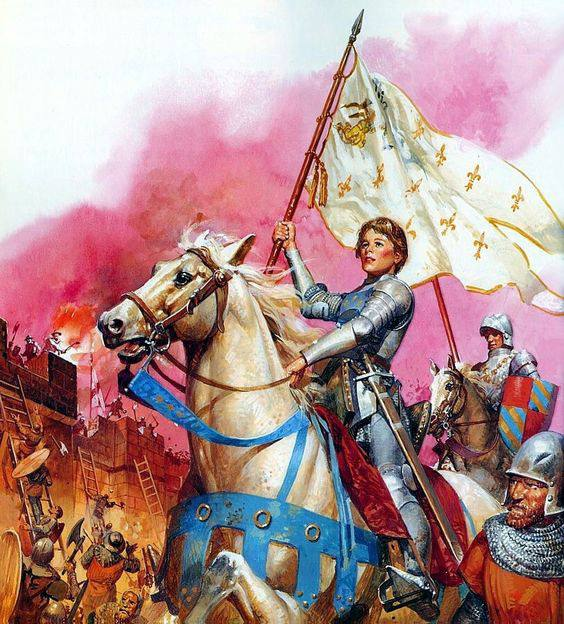
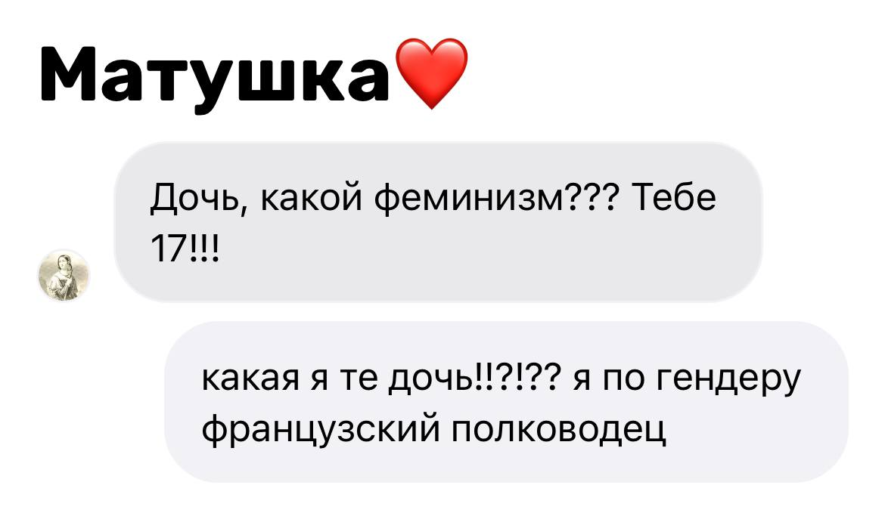
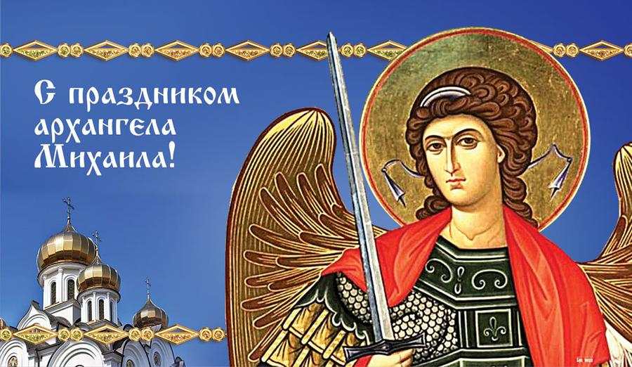
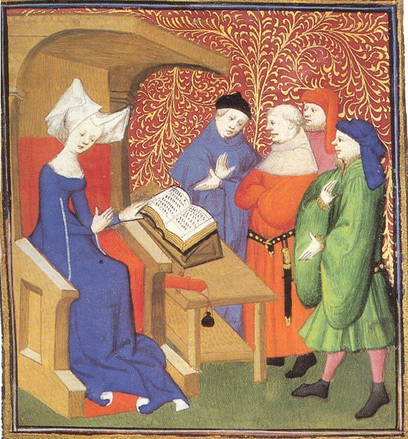
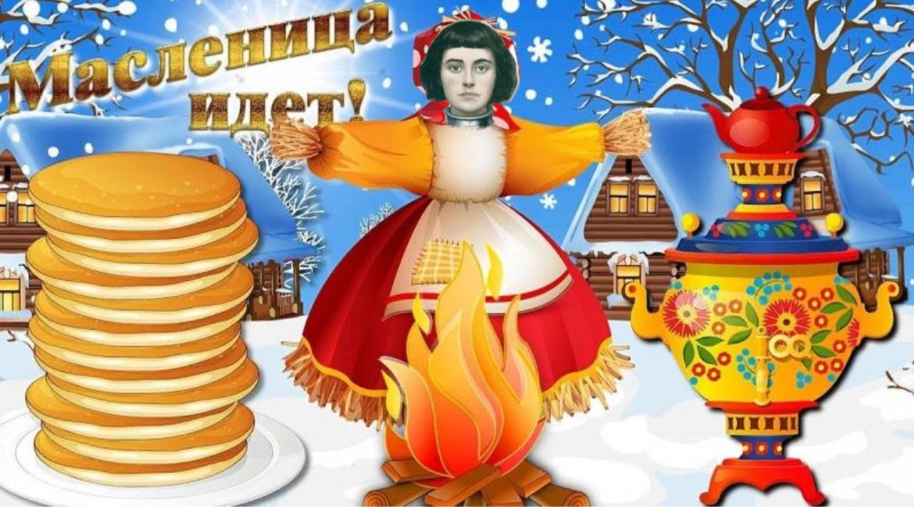

1429г. 🎉
Мужчины, вам бои продолжать выигрывать? Или я пойду у плиты постою?
Комментарии закрыты
1430г.
просто оставлю это здесь...))))
Комментарии:
ANONYMUS1423: лоол)
1429г.
До сих пор вспоминаю, как ко мне приходило видение АХАНГЕЛА МИХАИЛА..! Лишь благодаря нему я обрела силу, чтобы вести свой народ на борьбу и защиту... Спасибо, что выбрал меня, Архангел 💔
Комментарии(259)
Генрих Пятый: delulu 😅
11.02.1429г.
Как всегда, никто меня не слушает, но ко мне снизошли небеса, и я УВЕРЕНА, что наша армия под предводительством Карла потерпит под Руврэ поражение... ЧЕКАЙТЕ #послушайте !!![ㅂ෴ㅂ⊹]
Комментарии(392)
Де Бодрикур: твоя взяла , Жанна, можешь просить у меня ,что хочешь...
spring) 1429г.
Только что прочитала новую "Песнь о Жанне д'Арк" @Christine_de_Pizzzan ! Я в полном восторге, спасибо тебе, дорогая, за твою стойкость и поддержку в такие сложные времена ᕦ(○♥️3♥️○)ᕤ #création #Ventilateurs #France_unie
Комментарии(91)
Кристина Пизанская: 💋💋💋
29.05.1431г.
Je l'ai fait à ma façon...
#ФРАНЦИЯ_БУДЕТ_СВОБОДНОЙ
Комментарии закрыты
30.05.1431г.
всех с прошедшим праздником масленницы с: всем спасибки и покаааа :D
Комментарии закрыты